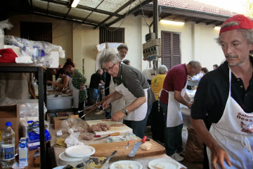
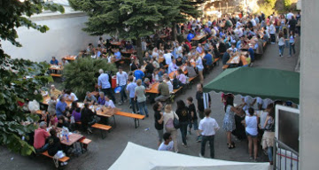
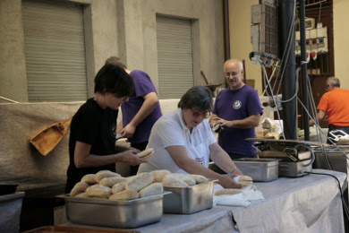

{% extends "layout.html" %}
{% set file = 'menu.html' %}
{%block title%}Festa di Solidarietà · La cucina propone...{%endblock%}
{%block pagetitle%}La cucina propone...{%endblock%}
{%block content%}
Bar e cucina saranno attivi durante tutta la manifestazione!
Giovedì sera
- Salamelle
- Würstel
- Patatine Fritte
Venerdì, Sabato e Domenica sera
- Salamelle
- Würstel
- Patatine Fritte
- Gnocco Fritto
- Fritto Misto di Pesce
- Polenta con Gorgonzola o Salamella
- Frittelle
- Solo il Sabato sera: Gnocchi al Pomodoro o al Gorgonzola
Domenica Mezzogiorno: Pranzo meneghino
- Risotto
- Cotoletta alla Milanese
- Sorbetto
{%endblock%}
{%block sidebar%}



{%endblock%}